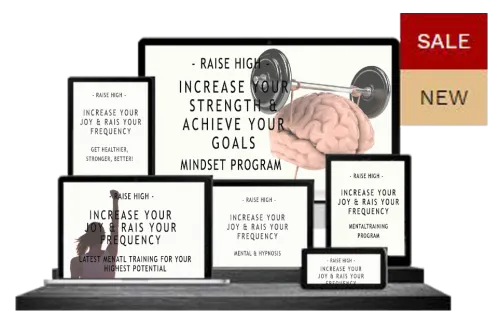

ARMLÄNGENTEST (Kinesiologie)
Produktprofil · Marktplatz-Daten 2026-10-13 · Verkaufsseiten-Recherche 2026-10-13 · Kategorien: Spirituality & Esotericism
- ARMLÄNGENTEST (Kinesiologie) ist ein/e Webinar in Spirituality & Esotericism, vertrieben über den Digistore24-Marktplatz von Anbieter PLUCINSKYS, gelistet seit 2021-05-01.
- Listenpreis $70.47; Digistore24 meldet — Checkout-Konversion, — Stornierungsquote und 25 % Affiliate-Provision.
- Verdienst pro Verkauf (Affiliate): $17.62 (Anbieter-seitige Statistik, keine Prognose).
Interesse an ARMLÄNGENTEST (Kinesiologie)? Aktueller Preis, Boni und Garantiebedingungen finden Sie auf der offiziellen Seite des Anbieters:
Offizielle Verkaufsseite ansehen
Affiliate-Link (Werbung) — wir verdienen ggf. eine Provision, ohne Mehrkosten für Sie.
Marktplatz-Daten
| Produkttyp | Webinar |
|---|---|
| Preis | $70.47 (Single payment) |
| Affiliate-Provision | 25 % |
| Garantie/Rückgabe | Laut Verkaufsseite des Anbieters — vor dem Kauf auf der offiziellen Seite prüfen |
| Anbieter | PLUCINSKYS (gelistet seit 2021-05-01) |
| Marktplatz-Statistiken* | Checkout-Konversion — · Stornoquote — · Verdienst/Verkauf $17.62 |
* Anbieter-seitige Statistiken von Digistore24; sie hängen von der Traffic-Qualität ab und sind keine Prognose.
Marktplatz-Beschreibung des Anbieters
<p>Empfiehl meinen ARMLÄNGENTEST-KURS ONLINE, wenn Du wie ich von kinesiologischen Testmethoden begeistert bist!<br /><br />Sie bereichern und erleichtern das Leben von Anwendern. Der Armlängentest ist eine wertvolle Entscheidungshilfe im Alltag...<br /><strong><br />Meine Video-Schulung liefert einen Einblick in die Welt der Energiemedizin, Selbstheilung und Persönlichkeitsentwicklung. <br /><br />Der ARMLÄNGENTEST-KURS ONLINE ist nicht nur eine gute Grundlage für den privaten Alltag, sondern auch für jeden, der mit dem Gedanken spielt, andere bei der Aktivierung von Selbstheilungskräften und der Lösung von Lebenskonflikten zu unterstützen...</strong><br /><br />Zu mir: Robert Plucinsky aus Berlin (Impulsgeber, Autor, Blogger, Herausgeber des “Inneren Kind Kartensets”, innerwise Coach) vermittelt wertvolle Inspirationen aus seiner langjährigen Praxis- und Kursleiterarbeit:</p> <ul> <li>Kurs: 10 Lektionen, über 6 Std. Material</li> <li>Den Armlängentest und weitere kinesiologische Testmethoden erlernen</li> <li>Schritt für Schritt alle Grundlagen erfahren, um sicher und korrekt testen zu können</li> <li>Im Preis inbegriffen sind spätere Updates zu neuen Erkenntnissen und Tipps zu immer wieder auftauchenden Fragen von Kursteilnehmern</li> <li>Ein ideales Geschenk für Kinesiologie-Interessierte</li> </ul> <p><br />Weitere Details zum Kurs:<br /><a href="https://www.impulsgeber.org/arml%C3%A4ngentest-kurs-online/">https://www.impulsgeber.org/arml%C3%A4ngentest-kurs-online/</a><br /><br />Bei Fragen stehe ich gerne zur Verfügung:<br /><a href="mailto:robert@plucinsky.de">robert@plucinsky.de</a><strong><br /><br />Ich freue mich auf eine erfolgreiche Affiliate-Partnerschaft. Auf das wir mit Leichtigkeit finanziellen Flow erschaffen, weil wir Menschen etwas Sinnvolles anbieten...<br /></strong><br />Liebe Grüße<br />Robert :-)<strong><br /></strong></p>
Von der Verkaufsseite des Anbieters
Seitentitel: ARMLÄNGENTEST-KURS ONLINE
Hauptüberschrift
ARMLÄNGENTEST-KURS ONLINE
75,00
Extras
Abschnitts-Überschriften
- inkl. 19 % MwSt.
- inkl. 19 % MwSt.
Recherche-Methode: rohes HTML · 306 Wörter · Qualität: medium · recherchiert am 2026-10-13. Vollständige Recherche-Datei (MD) ↗
Anwendung — laut Anbieter
10 - Video 10 - Hilfreiche Fragen und Anwendungstipps 1 - Hilfreiche Fragen und Anwendungstipps
Weitere Bilder (von der Verkaufsseite des Anbieters)
Bilder stammen von der offiziellen Verkaufsseite des Anbieters und zeigen das Produkt, wie es beworben wird.
Gut zu wissen
- Keine Garantie-Formulierung in unserer Recherche gefunden — bestätigen Sie das Rückgabefenster auf der offiziellen Seite, bevor Sie kaufen.
- Marktplatz-Zahlen (Preis, Provision, Konversion, Stornoquote) — Quelle: offizielle Digistore24-Marktplatz-API (Affiliate-Sicht), Stand 2026-10-13. Gegenprüfung: Marktplatz-Suche nach Produkt-ID 387680.
- Verkaufsseiten-Zitate — Quelle: https://plucinskys-onlinekurse.coachy.net/lp/armlangentest-kurs-online/, abgerufen 2026-10-13 (Methode: rohes HTML). Verify: offizielle Seite öffnen.
- Garantie / Rückgabe — vom Anbieter festgelegt; vor dem Kauf auf der Verkaufsseite bestätigen.
- Nicht von uns geprüft: Produktqualität, Ergebnisse, Testimonials — kein Praxistest für dieses Listing durchgeführt.
Häufige Fragen zu ARMLÄNGENTEST (Kinesiologie)
Antworten aus dem Marktplatz-Snapshot (2026-10-13) und der Verkaufsseiten-Recherche (2026-10-13); Anbieteraussagen sind inline gekennzeichnet.
Was ist ARMLÄNGENTEST (Kinesiologie)?
ARMLÄNGENTEST (Kinesiologie) ist ein Angebot des Typs „Webinar" im Digistore24-Marktplatz, Anbieter: PLUCINSKYS, gelistet seit 2021-05-01. Eingepflegt unter Spirituality & Esotericism. Digistore24 wickelt Checkout, Lieferung und Rückgaben ab.
Wie viel kostet ARMLÄNGENTEST (Kinesiologie)?
Der Digistore24-Marktplatz listet es für $70.47 (single payment). Preise legt der Anbieter fest und können sich ändern — der Marktplatz-Eintrag oben zeigt den Schnappschuss; die offizielle Verkaufsseite zeigt den aktuellen Preis.
Gibt es eine Geld-zurück-Garantie für ARMLÄNGENTEST (Kinesiologie)?
Unsere Verkaufsseiten-Recherche hat keine explizite Garantie-Formulierung gefunden. Viele Digistore24-Produkte bieten 60 Tage Geld-zurück, aber das legt jeder Anbieter selbst fest — bestätigen Sie es auf der offiziellen Verkaufsseite, bevor Sie kaufen.
Ist ARMLÄNGENTEST (Kinesiologie) seriös?
Wir bewerten keine Seriosität — wir veröffentlichen überprüfbare Zahlen: Anbieter PLUCINSKYS (gelistet seit 2021-05-01), Checkout-Konversion —, Stornoquote —, Affiliate-Verdienst/Verkauf $17.62 (alles Anbieter-seitige Marktplatz-Statistiken). Lesen Sie unsere 6-Punkte-Bewertungsmethode und entscheiden Sie anhand der Zahlen — oder diskutieren Sie ARMLÄNGENTEST (Kinesiologie) auf GitHub.
Wo kann ich ARMLÄNGENTEST (Kinesiologie) sicher kaufen?
Nur über die offizielle Verkaufsseite, die auf dieser Seite verlinkt ist (Checkout und Rückgaben laufen über Digistore24). Prüfen Sie dort Preis und Garantie vor der Bestellung. Der Link ist ein Affiliate-Link — der Kauf unterstützt diese Website ohne Mehrkosten für Sie.
Wie erhalte ich ARMLÄNGENTEST (Kinesiologie) nach der Zahlung?
Der Checkout läuft über Digistore24: Nach der Zahlung erhalten Sie Ihren Zugang oder Download per E-Mail und in Ihrem Digistore24-Kundenkonto. Lieferdetails für diesen Produkttyp: Webinare sindLive-Online-Sitzungen: nach der Anmeldung erhalten Sie den Link per E-Mail für den Termin. Bei Problemen kann der Digistore24-Käufersupport Ihre Bestellung wiederherstellen.
Alle 50 Käuferfragen zu Spirituality & Esotericism — das komplette Kategorie-FAQ.
ARMLÄNGENTEST (Kinesiologie) auf Reddit diskutieren
In Community-Threads vergleichen echte Käufer Erfahrungen. Wir verlinken Communities, keine einzelnen Posts — Threads verschwinden, Subreddits bleiben:
- Reddit-Suche nach „ARMLÄNGENTEST (Kinesiologie)" — Live-Ergebnisse, von uns nicht beeinflusst.
- Top-„Erfahrungs"-Treffer dieses Jahr — selbst nach Aktualität filtern.
Passendes auf Amazon.de
Physische Produkte und Zubehör, die häufig zusammen mit ARMLÄNGENTEST (Kinesiologie) gekauft werden:
- Meditation Bücher auf Amazon.de — Top-Ergebnisse, Amazon-Ranking.
- Bestseller: Meditation Bücher — live Liste von Amazon, von uns nicht kuratiert.
Werbung: Als Amazon-Partner verdient DigistorePicks DE an qualifizierten Käufen (Partner-tag adminstorede-21). Amazon setzt eigene Preise und Provisionen (niedrige einstellige Prozente — weit unter den 30–75% der Digistore24-Anbieter). Amazon ist ein Convenience-Angebot für Sachprodukte, kein Ersatz für das digitale Produkt oben.
Ähnliche Angebote in Spirituality & Esotericism

<p><strong>WOLKENWEICH Online-Begleitung - Dein 6-monatiger Premium Zugang - eingebettet, stabil von allen Seiten, geerdet, sicher, geborgen, ruhig&

<p><strong>bis zu 10% Provision | 600.000€ Umsatzpotenzial für 2026</strong></p> <h3>Marktplatz-Beschreibung</h3> <p>&

<p><strong>Bis zu 10% Provision | 600.000€ Umsatzpotenzial für 2026</strong></p> <h3>Marktplatz-Beschreibung</h3> <p>&

<h2>Glückscoach-Jahresausbildung</h2> <p>Empfehlen Sie einen <strong>hochwertigen, kostenlosen Online-Einstieg zum Thema Glück &
Ähnliche Preislage in Spirituality & Esotericism
<p>In diesem intensiven Selbstbewusstseins-stärken-Kurs lernst du in 7 kompakten Lektionen, wie du alte Muster durchbrichst, selbstbewusster werden kannst

<h3>Verdiene jetzt hohe Provisionen mit <em>Brainwashed Priming</em> – und sichere dir wiederkehrende Einnahmen!</h3> <p>Biete dei

<h4><span style="color:#ff0000;"><strong>Empfehle unsere Mindset Programme von health-generation und verdiene an allen weiteren Upse
Ähnliche Suchanfragen
Wo Sie es sich ansehen können
Wo Sie es sich ansehen können
Aktuelle Preise, Garantie und Boni finden Sie auf der offiziellen Verkaufsseite:
Offizielle Verkaufsseite ansehen
Das ist ein Affiliate-Link (Werbung) — kaufen Sie darüber, verdienen wir ggf. eine Provision, ohne Mehrkosten für Sie.
Quellen & weiterführende Informationen
- Offizielle Verkaufsseite (aktueller Preis, Garantie, Boni): plucinskys-onlinekurse.coachy.net/lp/armlangentest-kurs-onli (Affiliate-Link)
- Öffentliche Digistore24-Produktseite: digistore24.com/product/387680
- Vollständige Recherche-Datei (Markdown, versioniert): content/products/36647-arml-ngentest-kinesiologie.md
- Marktplatz-Kategorie: Spirituality & Esotericism
Wie wir Produkte wie ARMLÄNGENTEST (Kinesiologie) bewerten
Sechs Prüfungen, ausschließlich mit offiziellen Marktplatz-Zahlen. Die vollständige Bewertungsmethode lesen · unsere Recherche-Standards & Kennzeichnung.
Fragen oder eigene Erfahrungen mit ARMLÄNGENTEST (Kinesiologie)?
Praxis-Tests veröffentlichen wir erst, nachdem wir ein Produkt selbst gekauft haben — aber Ihre Erfahrung hilft anderen Lesern: Diskussion zu ARMLÄNGENTEST (Kinesiologie) auf GitHub starten/verfolgen. Falsche Zahl gefunden? Korrektur melden — jede Seite zeigt ihre Datenstände, Korrekturen gelten für die ganze Website.